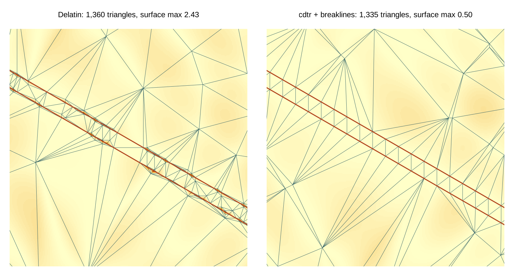
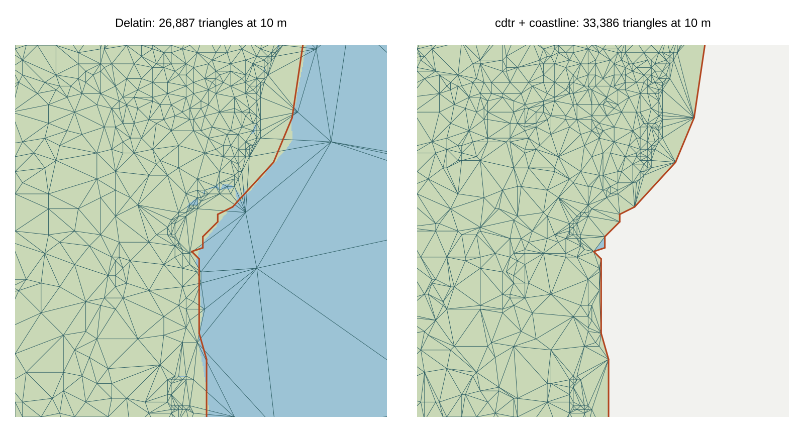

trianglewins / dev draft
Breaklines in terrain meshes
Development draft, 31 October 2026. Study 1 of math.gl terrain, read from the mesh side.
Interactive version: the deck.gl viewer. Code and
results: survey/dev-drafts/mathgl-terrain/ in this
repository.
Delatin, the adaptive mesher in math.gl's terrain module, keeps every grid sample within a vertical tolerance. It cannot follow a line it is given, such as a cliff edge or a coastline. A constrained TIN can. We built one in R: greedy refinement on top of cdtr, with the lines as breaklines. We then measured both on the same grids with one evaluator.
The short answer has three parts:
- On a cliff, a breakline makes the tolerance hold on the true surface. Without one, Delatin's 0.25 tolerance becomes 2.4 between samples.
- On a coast, the coastline goes into the mesh exactly, and the sea drops out as nodata. Delatin's shoreline sits up to 43 m off sea level, and up to 2,734 of its triangles join land and sea samples.
- On real terrain, every mesh here is 67 to 106 m off the bilinear surface at its worst point, even at a 5 m sample tolerance. Breaklines do not change that. A sample tolerance is not a surface bound, just as the math.gl roadmap says.
The meshers
| mesh | what it is |
|---|---|
| Delatin | delatin 0.2.0 from npm, run in Node. It is the
algorithm math.gl vendored from loaders.gl. Greedy Garland-Heckbert
insertion, one point at a time |
| greedy | Our R version of the same greedy idea on cdtr, without constraints. Each round inserts the worst sample of each triangle over tolerance, but only candidates within 70 to 85% of the round's worst |
| greedy + breaklines | The same, with the lines inserted first as fixed constraint segments, carrying their own heights |
One function measures every mesh. It rasterizes the triangles over
the grid and interpolates heights barycentrically. On Delatin's meshes
it reproduces Delatin's own getMaxError(). The batched
greedy needs about 35% more triangles than Delatin without constraints.
That comes from inserting in batches, not from cdtr, and it is study
question 3.
Example 1: an oblique cliff
The fixture is the roadmap's step: a 40-unit cliff, 4 cells wide, at 30 degrees across a 257 by 257 grid. Gentle curved terrain lies behind it. The breaklines are the top and bottom edges of the cliff, as 3D lines with a vertex every 4 cells. Because the surface is analytic, we can measure the error between samples, on a lattice 4 times finer.

| tolerance | mesh | triangles | sample max | surface max | surface RMSE |
|---|---|---|---|---|---|
| 0.25 | Delatin | 2,415 | 0.25 | 2.43 | 0.109 |
| 0.25 | greedy | 3,287 | 0.25 | 3.12 | 0.110 |
| 0.25 | greedy + breaklines | 2,246 | 0.25 | 0.29 | 0.094 |
| 0.5 | Delatin | 1,360 | 0.50 | 2.43 | 0.199 |
| 0.5 | greedy | 1,868 | 0.50 | 3.29 | 0.191 |
| 0.5 | greedy + breaklines | 1,335 | 0.50 | 0.50 | 0.181 |
| 1 | Delatin | 737 | 1.00 | 2.43 | 0.392 |
| 1 | greedy + breaklines | 829 | 0.99 | 1.00 | 0.361 |
| 2 | Delatin | 397 | 2.00 | 2.35 | 0.686 |
| 2 | greedy + breaklines | 576 | 2.00 | 2.00 | 0.693 |
Delatin's surface error stays near 2.4 at every tolerance. The cliff's kinks fall between samples, and no choice of sample vertices can place them. With breaklines the surface error equals the tolerance. At 0.5 and finer the mesh is also smaller than Delatin's, despite the batching overhead. At coarse tolerances the breakline vertices (one every 4 cells) dominate the count, and a sparser breakline would do.
Example 2: the Hobart coast
The grid covers kunanyi/Mt Wellington and the Derwent estuary: 513 by 513 samples from four z10 tiles of the AWS open terrain tiles, about 56 m on the ground. Land is height above 0. The coastline is the boundary of the land, with islets under 25 cells dropped, simplified to within one cell. It enters the mesh twice over: as a breakline at height 0, and as the mesh boundary, so sea samples are treated as nodata. Error is measured on land only. "Surface max" compares each mesh with the bilinear surface through the samples, on a 4 times finer lattice.

| tolerance | mesh | triangles | land max | land RMSE | surface max | coast max | land/sea triangles |
|---|---|---|---|---|---|---|---|
| 5 m | Delatin | 57,974 | 5.0 | 1.87 | 66.8 | 42.6 | 2,734 |
| 5 m | greedy | 70,012 | 5.0 | 1.80 | 66.8 | 50.7 | 3,028 |
| 5 m | greedy + coastline | 68,028 | 5.0 | 1.79 | 82.1 | 0 | 0 |
| 10 m | Delatin | 26,887 | 10.0 | 3.55 | 66.8 | 42.6 | 1,936 |
| 10 m | greedy | 34,263 | 10.0 | 3.40 | 66.8 | 50.7 | 2,155 |
| 10 m | greedy + coastline | 33,386 | 10.0 | 3.37 | 82.1 | 0 | 0 |
| 20 m | Delatin | 11,686 | 20.0 | 6.59 | 86.0 | 42.6 | 1,115 |
| 20 m | greedy | 15,964 | 20.0 | 6.42 | 105.9 | 50.7 | 1,230 |
| 20 m | greedy + coastline | 16,297 | 20.0 | 6.21 | 82.1 | 0 | 0 |
"Coast max" is the mesh height along the supplied coastline, which should be 0. For the constrained mesh it is 0 by construction: every coast segment survives as an unsplit mesh edge with 0 m at both ends, and the script checks this. Delatin's triangle counts include the sea, which it must mesh because its math.gl adapter refuses grids with invalid samples. The constrained mesh covers land only, at about the same count as the unconstrained greedy over the whole window.
Surface error on real terrain. At its worst point, every mesh is 67 to 106 m off the bilinear surface, at any tolerance from 5 to 20 m. The worst points sit beside single-sample spikes, where a triangle's diagonal and the bilinear patch disagree. Away from those spots the two agree closely: the 99th percentile is about 8 m at a 10 m tolerance. Breaklines do not address this. A per-triangle check against the interpolant would, which is the roadmap's "full-surface error certificates".
What this suggests
- For T7, a breakline's main value is fidelity, not triangle count. The cliff shows it on an analytic surface, and the coast on a real one.
- A boundary given as a constraint is also a nodata strategy for adaptive meshes. math.gl's adaptive adapters do not have one today.
- Sample error and surface error differ on real DEMs as well as on analytic ones. This applies to every mesher here, including ours.
- A constrained mesher would want to keep provenance: which edges are
breaklines, and which vertices came from vector input rather than the
grid. That is the spec's
originandedge_sources.TerrainGridMeshhasgridCoordinates, but nothing yet for vertices that are not on the grid.
Reproduce
From the repository root, with R (cdtr, terra, jsonlite), Node and GDAL:
sh survey/dev-drafts/mathgl-terrain/fetch-tiles.sh
npm install --prefix survey/dev-drafts/mathgl-terrain
Rscript survey/dev-drafts/mathgl-terrain/step.R
Rscript survey/dev-drafts/mathgl-terrain/coast.R # about 10 minutes
Rscript survey/dev-drafts/mathgl-terrain/figures.R
Rscript survey/dev-drafts/mathgl-terrain/export-viewer.R
python3 survey/dev-drafts/mathgl-terrain/build-viewer.pyResults land in
survey/dev-drafts/mathgl-terrain/results/
(step.csv, coast.csv). Large intermediates go
to cache/, which git ignores.